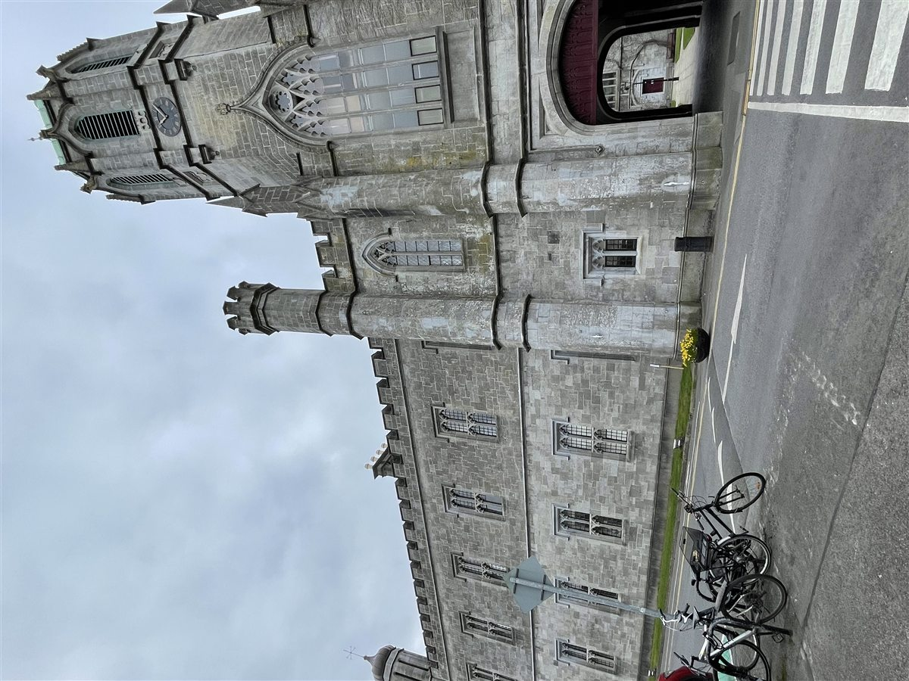
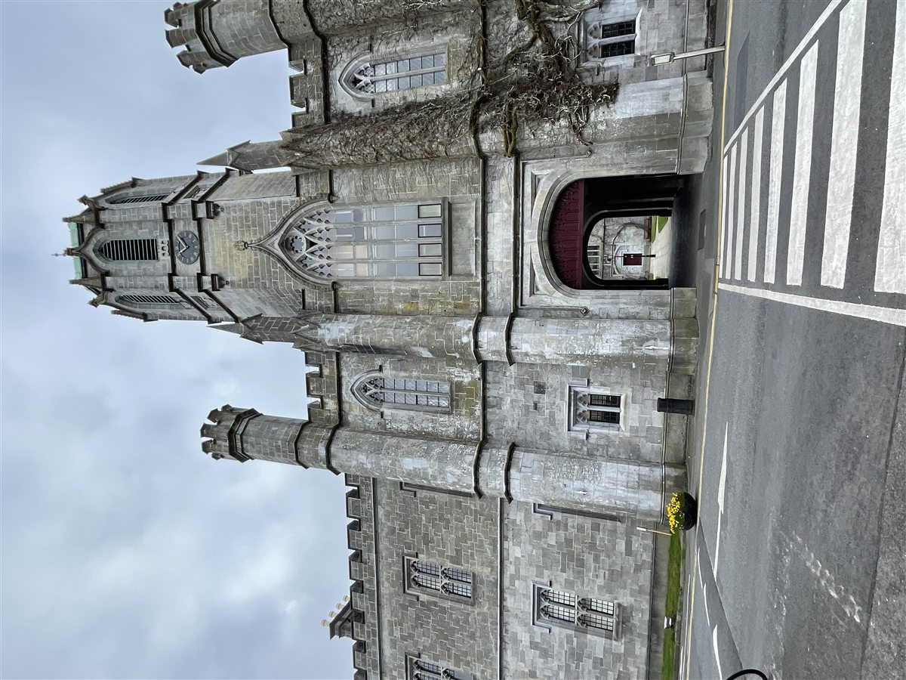
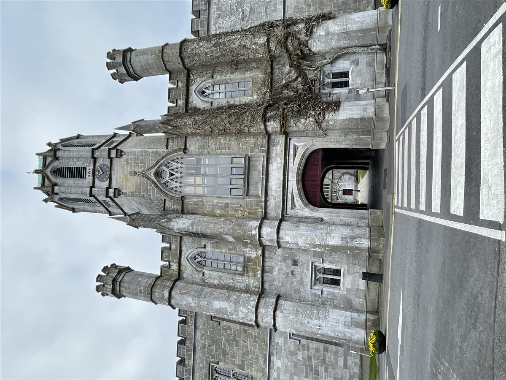
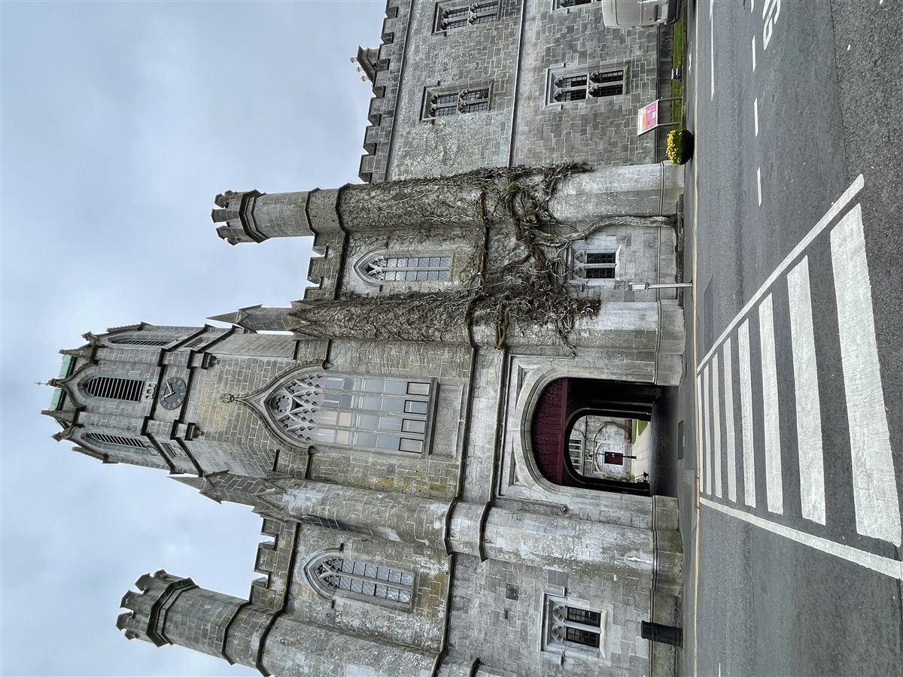
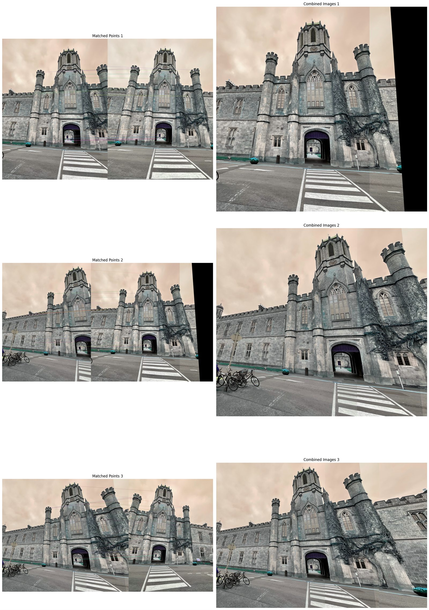
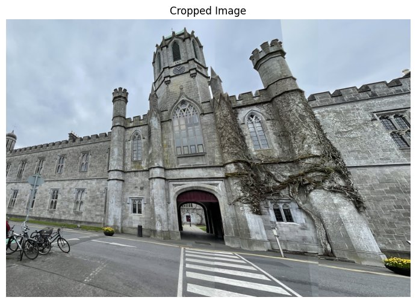

Original build
A Jupyter notebook testing five image sets with two to five frames. It records both successful panoramas and cases where repeated structure breaks matching.
Project 05
A classical vision pipeline that finds overlap across multiple photographs, estimates perspective transformations, and builds a wider view one image at a time.
Pipeline explorer
The stages below use the original photographs and notebook outputs from image set one.




The notebook reorders the sequence around a central reference image, then alternates the stitching direction to control accumulated distortion.

ORB describes repeatable image features. A brute-force matcher compares their binary descriptors with Hamming distance and retains the lowest-distance correspondences.
RANSAC rejects inconsistent matches while estimating the 3 × 3 transform. warpPerspective then maps the next image into the current panorama.

The final frame expands the field of view successfully, but it also exposes the limits of simple overwrite blending and repeated planar homographies.
Method
A Jupyter notebook testing five image sets with two to five frames. It records both successful panoramas and cases where repeated structure breaks matching.
Planar warps accumulate perspective error. Repeated doors and windows can create false matches, while direct image replacement leaves visible seams.
Cylindrical projection, match filtering, exposure compensation, seam finding, and multiband blending would make the pipeline more robust.
Open the notebook ↗